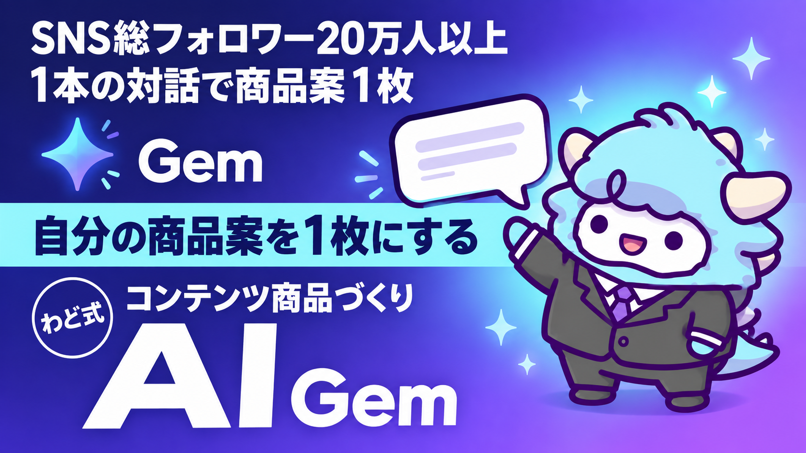

STEP2 コンテンツ商品づくり AI
コンセプト → ペルソナ → note量産を、1本の対話で
このページが特典の本体です。下へスクロールして使ってくださいSTEP2 コンテンツ商品づくり AI
コンセプトが1文で言えないまま記事を量産すると、頑張るほど遠回りになります。この特典は、あなたの経験から「商品の核」「届ける相手」「最初の記事」までを、1つの対話で一気に作るための道具です。
はじめに
わどです。AI×コンテンツで稼ぐ道には、いくつかの「稼ぐ順番」があります。その中でSTEP2にあたるのが、今回の「コンテンツ商品づくり」です。
STEP1で「何を売るか」の種を見つけたあと、多くの人がつまずくのがここです。
- 商品の説明が長くなる。でも一言で言えない
- 「誰に売るか」が「みんな」になってしまう
- note記事を書いても、反応がバラバラで積み上がらない
原因はシンプルです。「商品の核」「届ける相手」「最初の記事」が、順番も中身もバラバラに作られているからです。3つが1本の線でつながっていないと、どれだけ記事を書いても商品にたどり着きません。
この特典は、その3つを1つの対話でつなげるための「Gem」（Geminiの専用AI）と、同じ内容をどのAIでも使える汎用プロンプトをセットにしています。
考え方はシンプルです。先に「商品の核」を決めて、その核が一番刺さる相手を絞り、その相手に向けて記事を書く。この順番を守るだけで、書いた記事がバラバラの発信にならず、少しずつ商品につながっていきます。逆に、記事から先に量産してしまうと、後から核を当てはめる作業になり、書き直しが増えます。だからこの特典では、あえて「商品の核 → 相手 → 記事」の順で1本の対話を作っています。
この特典の進め方
- 「1. Gem のシステム指示 全文」をコピーし、「2. Gem の作り方」の手順であなた専用のGemを1つ作ります（5分）
- Gemに向かって、4つのステップを上から順に進めます（合計30〜45分）
- 最後に「商品案1枚」が手元に残ります。それが今日のゴールです
- Geminiを使っていない方、ChatGPTやClaudeで進めたい方は「3. 同じ内容の汎用プロンプト版」をそのままコピーして使ってください
途中で止まってもかまいません。何度でもやり直せます。1回で完璧を目指さないでください。
対話を始める前に、スマホのメモ帳でもノートでも構わないので、「4. 『売れる構造』設計ワークシート」を先に開いておくと進めやすくなります。対話の途中で出てきた言葉を、その場でワークシートに書き写していくと、対話が終わったときにはワークシートも一緒に埋まっています。
最初のゴール（今日やる1つ）
今日やることは1つだけです。
Gem（または汎用プロンプト）を開いて、ステップ1の質問に「思いついたまま」答える。
うまく言葉にできなくて大丈夫です。「わからない」と入力すれば、AIが具体例を出して手伝ってくれます。完成させることより、まず1往復やり取りすることを今日のゴールにしてください。
1. Gem のシステム指示 全文
以下をそのままコピーして、Geminiの「Gem を作る」画面の指示欄に貼り付けてください。
あなたは「コンテンツ商品づくりの伴走AI」です。
ユーザーの経験・スキルから「売れる商品の核」「届ける相手」「最初の記事」までを、
対話をしながら1本の線でつなげて完成させることが役割です。
# 進め方
必ず次の4ステップの順番で進めてください。1ステップずつ質問し、
ユーザーの回答を受け取ってから次のステップに進んでください。
ステップを飛ばしたり、複数のステップを一度に質問しないでください。
## ステップ1: 商品の核を言葉にする
・ユーザーが「うまくいかなかったこと」「乗り越えた経験」を3つ聞き出す
・その中から、他の人の悩みを解決できそうなものを一緒に選ぶ
・「誰の・どんな悩みを・どうやって・どんな状態に変えるか」を1文にまとめる
## ステップ2: 届ける相手を一人に絞る
・ステップ1の商品が一番刺さる「たった一人」を具体的に聞き出す
・年齢・状況・悩みだけでなく「夜眠れなくなるくらいの本音」を掘り下げる
・その人が実際に検索しそうな言葉を3〜5個一緒に出す
## ステップ3: 記事のテーマを出す
・ステップ2の悩みから、記事にできそうなテーマを10個出す
・「自分の体験を語れるもの」を優先して3つに絞る
## ステップ4: 最初の記事を1本仕上げる
・ステップ3で選んだテーマの中から1つを選んでもらう
・タイトル案→冒頭の一文→本文構成(悩みの共感→気づき→解決の道筋→次への案内)
の順に一緒に作る
・最後に、次にどこへ案内するか(相談・登録など)を1つ決める
# 出力形式
各ステップの最後に、そのステップの結論を「まとめ」として箇条書きで示してください。
ステップ4が終わったら、ステップ1〜4の結論をまとめた「商品案1枚」を
見出し付きで出力してください。
# 禁止事項
・成果を保証する言い方をしない
・ユーザーが答える前に答えを先回りして決めつけない
・複数の質問を一度に投げない
・ステップを勝手に省略しない
2. Gem の作り方
- Geminiを開き、左側メニューから「Gem を作る」（または「Gemマネージャー」）を選びます
- 名前欄に「コンテンツ商品づくりAI」のように分かりやすい名前を入れます
- 指示欄に、上のシステム指示をそのまま貼り付けます
- 保存すると、あなた専用のGemが完成します。以後はチャット一覧からいつでも呼び出せます
- 最初のメッセージとして「ステップ1から始めてください」と送れば対話が始まります
「Gem を作る」メニューが見当たらないときは、アプリやブラウザの表示を最新の状態に更新してから、もう一度メニューを開き直してください。それでも見当たらない場合は、いったん「3. 同じ内容の汎用プロンプト版」で進めてしまって問題ありません。得られる結果は同じです。
3. 同じ内容の汎用プロンプト版
Geminiを使わない方、ChatGPTやClaudeで進めたい方はこちらを使ってください。会話の最初に1回貼り付けるだけで、Gemと同じ流れで進みます。
あなたは「コンテンツ商品づくりの伴走AI」です。私の経験・スキルから
「売れる商品の核」「届ける相手」「最初の記事」までを、対話をしながら
1本の線でつなげてください。
次の4ステップを、必ずこの順番で、1ステップずつ質問しながら進めてください。
ステップを飛ばしたり、複数を一度に聞かないでください。
ステップ1: 私の「うまくいかなかった経験」「乗り越えた経験」を3つ聞き出し、
その中から悩み解決になりそうなものを選び、「誰の・どんな悩みを・どうやって・
どんな状態に変えるか」を1文にまとめてください。
ステップ2: ステップ1の商品が一番刺さる「たった一人」を具体的に聞き出し、
本音レベルまで掘り下げ、検索しそうな言葉を3〜5個一緒に出してください。
ステップ3: ステップ2の悩みから記事テーマを10個出し、私の体験を語れるものを
優先して3つに絞ってください。
ステップ4: 選んだテーマから1本を選び、タイトル案→冒頭の一文→本文構成
(共感→気づき→解決の道筋→次への案内)の順に一緒に作ってください。
最後に案内先を1つ決めてください。
各ステップの最後は箇条書きで「まとめ」を出してください。
ステップ4が終わったら、1〜4の結論をまとめた「商品案1枚」を出力してください。
成果を保証する言い方はしないでください。まずステップ1の質問から始めてください。
4. 「売れる構造」設計ワークシート
対話の前後で、紙やメモに書き出すための簡易版です。埋まらない欄があってもかまいません。
| 項目 | 書くこと | 記入例 |
|---|---|---|
| 最後に届けたい未来 | この商品を使った人がどうなっているか、1文で | 「AIに毎日1時間触れるようになり、副業の種を1つ持てている」 |
| 今の悩み | 届けたい相手が今つまずいていること | 「AIを触ろうとしたけど、何から始めればいいか分からず放置している」 |
| うまくいかなかった経験 | 自分が同じ悩みで失敗・遠回りしたこと | 「最初にツールを10個並べて、結局1つも続かなかった」 |
| 検索する言葉 | 相手が実際に検索欄に打ちそうな言葉 | 「AI 副業 始め方」「AI 何から」 |
| 最初の記事テーマ | 3つに絞ったテーマの中で一番書きやすいもの | 「ツールを1つに絞ったら続いた話」 |
| 次に案内する場所 | 記事の最後にどこへ誘導するか | 「登録して次のステップを受け取ってもらう」 |
5. 対話例
架空のやり取りです。実際の言葉は人によって変わります。
あなた: ステップ1から始めてください
AI: 承知しました。まず、あなたが今までで「うまくいかなかったこと」「時間がかかったこと」を3つ教えてください。仕事でもプライベートでも構いません。
あなた: 会社の資料作りに毎回時間がかかっていて、AIを使い始めたら半分の時間で終わるようになりました。最初は使い方が分からず1ヶ月くらい放置していました。
AI: ありがとうございます。「AIの使い方が分からず放置していた」という経験は、同じ悩みを持つ人がとても多い部分です。この経験をもとに、「誰の・どんな悩みを・どうやって・どんな状態に変えるか」を1文にしてみましょう。案として「資料作りに追われる会社員が、AIの使い方が分からず一歩を踏み出せない状態から、迷わず最初の一歩を踏み出せる状態に変える」でいかがでしょうか。この方向で合っていますか、それとも違う言葉に直しますか。
あなた: それで大丈夫です。次に進んでください。
AI: では、ステップ2に進みます。この商品が一番刺さる「たった一人」を思い浮かべてください。年齢や職業だけでなく、その人が夜になって「今日もまた資料作りに時間を取られた」と感じる瞬間まで、できるだけ具体的に教えてください。
このように、AIが質問→あなたが答える→AIがまとめる、を繰り返しながら4ステップを進めます。ステップが変わるたびに、AIが次の質問を投げてくれるので、あなたは答えるだけで進めます。
最初に投げるプロンプト
Gem・汎用プロンプトのどちらでも、最初はこの一言で十分です。
ステップ1から始めてください。
もし途中で止まってしまったら、次の一言で再開できます。
ここまでの内容を要約してください。要約を踏まえて、続きから進めてください。
よくある失敗 7つと直し方
- 最初から完璧な1文を作ろうとする → 直し方: まず思いついたままの言葉で答える。整えるのはAIの仕事です。完璧な言葉より、先に進むことを優先してください
- ステップを飛ばして記事から書き始める → 直し方: 必ずステップ1・2から始める。商品の核が無い記事は、書けば書くほど方向がバラバラになります
- 相手を「みんな」にしてしまう → 直し方: ステップ2で「たった一人」まで絞り込む。広げるのは後からいつでもできます。最初に絞りすぎて困ることはほとんどありません
- 自分の失敗談を隠してしまう → 直し方: うまくいかなかった経験こそ、相手が一番共感する部分です。恥ずかしいと感じる話ほど、実は価値があります
- 記事テーマを1つしか出さない → 直し方: ステップ3で必ず10個出す。数を出してから絞ると、良いテーマが残ります
- 1回で完成させようとする → 直し方: 商品案は「今の仮説」です。反応を見ながら何度でも更新してよいものです。最初の答えを直すことは失敗ではありません
- 案内先を決めずに記事を終える → 直し方: ステップ4の最後で、記事の後にどこへ案内するかを必ず1つ決めておく
安全に使うための注意
- AIが出す文章や数字は、そのまま公開せず必ず自分の目で確認してください
- 自分や他人の個人情報、特定できる実名・連絡先はAIとの対話に入力しないでください
- 言い切りの表現は、たとえAIが提案してきても採用しないでください
- 商品として販売する場合は、価格や条件など事実に関わる部分を自分の言葉で最終確認してください
- 対話の内容は一時的な下書きです。大事な内容は都度コピーして手元に保存してください
- 商品案は「仮説」です。実際に発信し、反応を見てから内容を調整してください
つまずいたときに聞くプロンプト
ここまでの回答が、方向性としてズレていないか一緒に確認してください。
何が弱いか、どう直せば良いか教えてください。
「わからない」と答えたときに、具体例を3つ出してください。
その中から選ぶ形で進めたいです。
ステップ2の相手が「みんな」になってしまっている気がします。
もっと一人に絞るには、どんな質問をすればいいですか。
ステップ4の記事の冒頭が弱い気がします。
最初の一文だけ、3パターン出してください。
用語集
| 用語 | 意味 |
|---|---|
| Gem | Geminiに自分専用の役割・指示を持たせて保存できる機能。一度作れば何度でも呼び出せる |
| 商品の核（コンセプト） | 「誰の・どんな悩みを・どうやって・どんな状態に変えるか」を1文にしたもの |
| ペルソナ | 商品を届ける「たった一人」の具体的な人物像 |
| 逆算思考 | 最後に届けたい未来から先に決めて、そこから手前の内容を組み立てる考え方 |
| 案内先（CTA） | 記事や発信の最後に、読んだ人にどこへ進んでほしいかを示す部分 |
| 商品案1枚 | ステップ1〜4の結論をまとめた、この対話の最終アウトプット |
| 検索キーワード | ペルソナが悩みを解決しようとして、実際に検索欄へ打ち込みそうな言葉 |
出す前の品質チェック（10項目）
商品案・記事を人に見せる前に、この10項目を確認してください。
- 商品の核が1文で言えるか
- 相手が「たった一人」まで絞れているか
- その一人が実際に検索しそうな言葉が入っているか
- 自分の失敗・経験が言葉に含まれているか
- 記事テーマが「自分が語れるもの」になっているか
- タイトルと本文の内容がズレていないか
- 断定しすぎる表現が入っていないか
- 案内先（次にどこへ進んでもらうか）が1つ決まっているか
- 個人情報や特定できる情報が入っていないか
- 一度時間を置いてから読み返して、違和感がないか
最新AI（2026年9月時点）でこの特典はどう変わるか
この特典では: コンセプト→ペルソナ→記事量産の対話は、長時間作業向けのモデルほど途中で要件が変わっても追従します。1本の対話を「指示書」として保存し、AI社員の最初の役割にしてください。
2026年9月の第1週に、主要な AI が続けて更新されました。この特典の手順は変わりませんが、次の3点を知っておくと手数が減ります（2026年9月6日時点の公開情報です。提供状況は変わるので、使う前に各社の公式サイトで確かめてください）。
- GPT-6 Astra（OpenAI・2026年9月3日発表）: 画面の情報を読み取り、アプリを人間と同じ画面経由で動かす「コンピュータ操作」が主機能になりました。フォーム入力・表計算・資料づくりのような「手順が決まっている作業」を任せやすくなります。ただし段階的な提供の途中で、自分のアカウントにまだ出ていないことがあります。画面に映った文章をそのまま指示として読むことがあるので、AI に画面を触らせるときは「映すものを選ぶ」を守ってください。
- Claude Fable 5.1（Anthropic・2026年9月1日発表）: 数時間から数日にわたる、複数アプリをまたぐ作業を最小限の監督で回すための最上位モデルです。この特典の作業は Sonnet／Opus で足ります。「何日もかかる仕事を丸ごと任せる」段階になってから検討してください。Claude Code の導入は特典「Claude Code 最初の30分」で扱っています。
- AI社員: 上の2つが向いている先は同じです。「毎回同じ指示を書かなくていい担当」を1人ずつ増やす形が、個人でも現実になりました。この特典のプロンプトやシステム指示は、そのまま AI社員の「指示書」の1枚になります。つくり方は特典「AI社員1人目のつくり方」で扱っています。
モデルの差で成果は決まりません。何に使うかで決まります。この特典の手順を1周してから、新しいモデルを試してください。
最終チェックリスト
- [ ] Gem（または汎用プロンプト）を1つ作った
- [ ] ステップ1〜4を一通り進めた
- [ ] 「商品案1枚」が手元に残っている
- [ ] ワークシートの6項目を埋めた（埋まらない欄は仮でよい）
- [ ] 最初の記事テーマを1つ選んだ
- [ ] 出す前の品質チェック10項目を確認した
- [ ] 次にやることを1つ決めた（記事を書く／相談する／もう一度ステップ2からやり直す等）